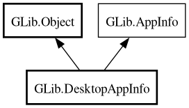

DesktopAppInfo
Object Hierarchy:

Description:
public class DesktopAppInfo :
Object,
AppInfo
Content:
Properties:
Static methods:
Creation methods:
Methods:
- public string get_action_name (string action_name)
- public bool get_boolean (string key)
- public unowned string get_categories ()
- public unowned string get_filename ()
- public unowned string get_generic_name ()
- public bool get_is_hidden ()
- public unowned string[] get_keywords ()
- public string? get_locale_string (string key)
- public bool get_nodisplay ()
- public bool get_show_in (string desktop_env)
- public unowned string get_startup_wm_class ()
- public string get_string (string key)
- public string[] get_string_list (string key)
- public bool has_key (string key)
- public void launch_action (string action_name, AppLaunchContext launch_context)
- public bool launch_uris_as_manager (List<string> uris, AppLaunchContext? launch_context, SpawnFlags spawn_flags, SpawnChildSetupFunc? user_setup = null, DesktopAppLaunchCallback? pid_callback = null) throws Error
- public bool launch_uris_as_manager_with_fds (List<string> uris, AppLaunchContext? launch_context, SpawnFlags spawn_flags, SpawnChildSetupFunc? user_setup = null, DesktopAppLaunchCallback? pid_callback = null, int stdin_fd = -1, int stdout_fd = -1, int stderr_fd = -1) throws Error
- public unowned string[] list_actions ()
Inherited Members:
All known members inherited from class GLib.Object
All known members inherited from interface GLib.AppInfo